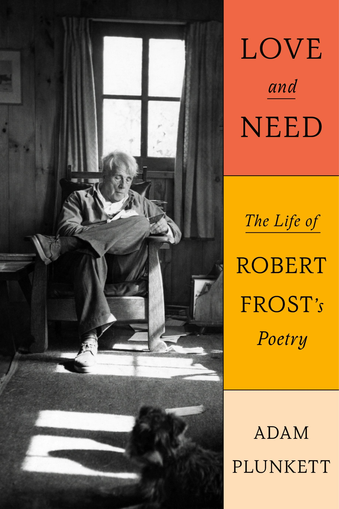

Love and Need
The Life of Robert Frost’s Poetry

Brilliant… offers profound connections
-
The critic Adam Plunkett expertly teases out the many meanings of Frost’s poems… Blending biography and criticism, Plunkett shows how the circumstances of Frost’s peripatetic life gave rise to some of his most successful poems. As in the best critical biographies, Plunkett does not merely track down real-world inspiration for a given work. Rather, he brings together Frost’s personal life, literary sources, and publication history to enrich our understanding of the poems, then uses the poems to enhance our understanding of the life. The result is a thorough, elegant, and, at times, surprising study of Frost, who emerges as a remarkably complex poet and a compelling but complicated man.
Maggie Doherty · The New Yorker -
In his excellent new biography, Love and Need: The Life of Robert Frost’s Poetry, critic Adam Plunkett wrestles with how to fit [Frost’s] mercurial work (no American poet shifts tones so suddenly or subtly as Frost) with [his] mercurial life… In Plunkett, Frost has found an ideal biographer, possessed of an ear for the tonal and moral uncertainties that constitute his subject’s legacy.
Anthony Domestico · The Washington Post -
Love and Need proves an illuminating tour of Frost’s life as well as his afterlife on the page, and these nuanced readings deepen our understanding of his still-powerful poems.
Abigail Deutsch · The Wall Street Journal -
A capacious exploration of Frost’s complicated life and poetry… A superb biography that neatly weaves in nuanced and insightful readings of many poems.
Kirkus Reviews (Starred Review) -
Plunkett’s close readings of several of Frost’s best poems brilliantly bring out the “hidden architecture” that underlies them all… Plunkett’s book, perhaps better than any other on Frost, illuminates the theological and spiritual core of Frost’s thought and art… Love and Need is the best introduction to Frost available, and a tonic even for those of us who already long ago chose to follow Frost into “those dark trees, / So old and firm they scarcely show the breeze.”
Sam Gee · The Point -
Though interest in poetry overall is dwindling and rather rapidly, Frost continues to draw readers and top-flight critics. Adam Plunkett’s recently published Love and Need: The Life of Robert Frost, for example, is a deeply thoughtful blending of reflections on Frost’s life and his work. It testifies eloquently to our culture’s need to continue reading and brooding on the poems of this profound and often misunderstood man… Obvious allusion is not common in Frost, though his work is drenched in the English poetic tradition, as Plunkett demonstrates.
Mark Edmundson · Liberties -
I’ve been rereading Robert Frost lately. The immediate occasion is Adam Plunkett’s superb new biography, Love and Need: The Life of Robert Frost’s Poetry. But Frost is always worth returning to.
Anthony Domestico (again!) · Commonweal -
This book surprised me by making me see a more human, more complicated, and more likable Frost. While changing the reader’s perspective of the poet himself, this book takes the reader into a deeper look at the work that came out of his complex psychology… Plunkett shows us the changes in Frost’s political views, his conflicted relationship with Christianity and the Bible, his insight into the meaning of metaphor, and his lifelong attempts to balance loyalty and ideals, justice and mercy (he preferred justice and called himself an “Old Testament Christian”).
Russell Moore · Christianity Today -
Adam Plunkett’s superb new biography of Robert Frost [is] written not only as a searching commentary on a poet’s life and work, and the influence of other poets on him, but as a deeply engaging dialogue with other Frost biographers, and how their personalities interacted with the poet, alternately illuminating and distorting the understanding of the man and his work. As tempted as some reviewers might be to call Mr. Plunkett’s biography “definitive” because of his exquisitely balanced, Richard Ellmann-like narrative, his work too will have an expiration date, as I’m sure [Hans] Renders would say, because biography by definition is in flux over time, constantly accumulating new evidence and interpretations.
Carl Rollyson · The New York Sun -
Adam Plunkett is an eloquent and meticulous writer, and his new biographical study of Robert Frost, Love and Need, is a welcome addition to a long list of excellent books on the poet… His work adds handsomely to our understanding of Frost, bringing us closer to the poems themselves.
Jay Parini · The American Scholar -
Just as Plunkett is the unique reader of Frost interested in both our studied and unstudied reactions to the poems, he is the unique biographer of Frost whose work is neither hagiography nor slander. His is a middle way of which, I think, Frost would approve.
Jessica Laser · The Paris Review Daily · Interview -
Plunkett’s brilliant readings of Frost’s best-known poems offer refreshing, alternative interpretations… Plunkett’s refined prose and his astute readings of Frost’s poems in Love and Need offer a candid portrait of the poet’s enduring creative genius.
Henry L. Carrigan Jr. · BookPage -
In his definitive critical-biographical study, Love and Need: The Life of Robert Frost’s Poetry, Adam Plunkett asserts that the man and his work, Frost and his poetry, are one… Plunkett restores the wonder of Frost’s initial mystery as poet and person, his beguiling talk-song reverie, his otherworldly spell-casting.
James Provencher · The Arts Fuse -
[Love and Need] offers something of a recuperation of the poet by reminding us that Frost’s fierceness is also a source of the considerable power of his work… Plunkett excels at bringing the poems to life with contextual details and literary resonances.
Micah Mattix · Washington Examiner -
In Adam Plunkett’s new biography, Love and Need, both Frost and his work receive a fresh re-examination. Plunkett’s own prose is smooth and compelling, inviting readers into a writer and a life more surprising than we suspected.
Kate Tuttle · The Boston Globe -
Literary critic Plunkett debuts with a nuanced examination of how a desire for privacy clashed with a need to be known in the poems and life of Robert Frost.
Publishers Weekly -
[Love and Need] is powerful not only in its tellings of Frost’s relationships, career and somewhat inaccessible inner life, but also in its analyses of Frost’s poetry… An immensely challenging, worthwhile read.
Natalia Nebel · Newcity -
Plunkett’s lively narrative … moves dexterously between the life, Frost’s relationships, the progression of the books, and Frost’s inspirational sources to limn Frost’s turbulent psyche and its interplay with the poems… He also reveals many of Frost’s rhetorical influences and borrowings from Shakespeare, Herrick, Wordsworth, Coleridge, Tennyson, Emerson and Browning.*
Ron Slate · On the Seawall -
A critical biography of Robert Frost wouldn’t rank among my reading priorities; the delight of Adam Plunkett’s Love and Need: The Life of Robert Frost’s Poetry rests on his consistently fresh interpretations and a prose style resistant to high art mummeries.
Alfred Soto · Humanizing the Vacuum -
I like what Plunkett has done. Some of his work is, frankly, amazing… The book is precisely written, albeit as though in a dream state. Plunkett is a poet and it shows.
Niklas Pivic · Niklas Reviews
-
This is a book I have needed for years, without knowing how much I did. Love and Need, precisely titled, tells the story of great art attained in the course of ordinary human foibles and affections, varieties of decency and rage, in a particular American life. Adam Plunkett’s patient, high-grade attention to Robert Frost’s life and work cleans away the encrusted stupidities of fame.
Robert Pinsky -
This is an exemplary literary biography—concise, elegantly written, and appropriately focused on the life as a means for understanding the work. I wouldn’t have thought I had much to discover about Robert Frost at this point, but Adam Plunkett’s book has been a revelation to me.
Christian Wiman -
In Love and Need, Adam Plunkett gives us a fresh, expansive, and intimate account of Robert Frost’s life and poetry. Blending literary criticism and life writing in innovative ways, Plunkett offers new perspectives on Frost as a poet, friend, husband, lover, and father, and interrogates the damaging myths perpetuated by Frost’s past biographers. Erudite, meticulously researched, and beautifully written, Love and Need is a brilliant tribute to one of America’s most beloved, complex, and misunderstood poets.
Heather Clark · author of Red Comet -
Adam Plunkett’s book is an impressive fusion of biography and criticism, taking us through Frost’s career from beginning to conclusion, always keeping closely in touch with the poems that matter most. Plunkett’s own writing is notable for its poetic strength, for bold speculation along with a subtle humor worthy of its subject. Richly convincing, this is a major addition to our appreciation of Frost’s achievement.
William Pritchard · author of Frost: A Literary Life Reconsidered -
My contribution to this radio show, aired by Connecticut Public Radio, is relatively short, most of the conversation quite rightly being with Adam Plunkett, author of an excellent new critical biography of Frost. Among other things, it’s a balanced corrective to the unrelievedly disparaging one by Lawrance Thompson.
Sydney Lea · former Poet Laureate of Vermont
Very grateful to everyone quoted above for reading the book so generously.
—Adam
* I’d also note, e.g., Milton, Catullus, Marvell, Keats, Shelley, Dickinson, Longfellow, Yeats, Eliot, Abraham Lincoln.